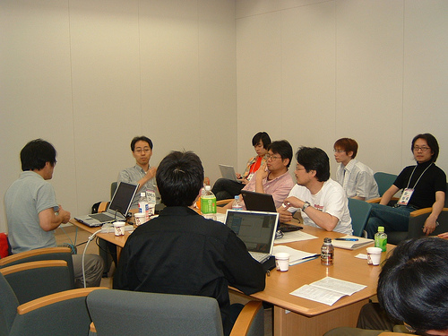
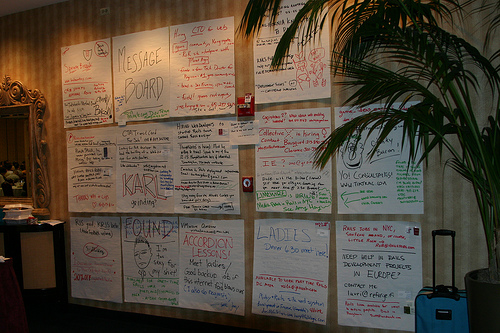
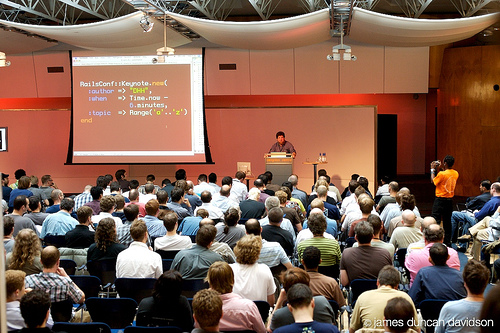
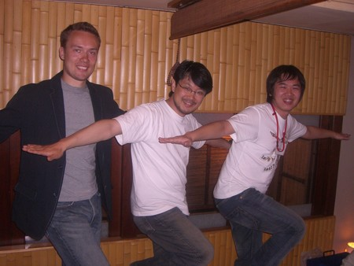

A Fine Time, Oh Yes! #
Hey, what a fun year, you know?
January – Zed releases Mongrel 0.1. Chris Pine’s classic Learn to Program is published. Ruby-doc redesigns. Steve Yegge’s A Little Anti-Anti-Hype sets Steve apart as one of Ruby’s most-heard proponents, proving that Rubyists (aside from being just “nice”) can still be grumpy and drunken and all that. Camping, it’s the little wheels.
February – YARV 0.4.0 comes out. Minero Aoki gets Rails running on it. Ruby brigades are a hot topic.
March – Translation of Ruby Hacking Guide to English begins. Rubyists at SXSW Interactive. Lots of people rip on poor, poor James McGovern.
April – Canada on Rails. DHH says the F-word. And flips the crowd off or something. It’s a pretty serious deal. Later that month: healing.
May – Ruby Inside pops up, suddenly, helping lots of little projects and interesting things everywhere. Google Summer of Code kicks off, sponsoring 10 fledgling Ruby projects. Pat Eyler interviews Zed and then does like a hundred more interviews after that.
 Ruby’s Core Team at RubyKaigi in Japan.
June – RailsConf 2006. Railsers shake hands and go nuts. Try Ruby appears in Second Life. Intangible coders made of various polygons go nuts.

The RailsConf message board, a fond memory.
July – Tim Bray starts to get serious about Ruby. He and Sam Ruby descend upon RedHanded. Lots of Rubyists at OSCON. FOSCON, a Ruby-themed grassroots conf, makes its second year.
August – After a year and a half, the new Ruby site goes up. The LLRing is held in Japan. RubyConf-MI. Rails Blob.

London
September – Matz starts messing around in the lab. (:symbol.is_a? String => true) and (String < Enumerable == false). RailsConf Europe in London. I get to meet Chris Neukirchen and Hampton Caitlin gives a talk with a nice, tall beer in his hand. Aaron Patterson opens up his webcam and BetaBrite to remote hacking.
October – RubyConf 2006 and the subsequent Denver Accord. Rails gets UTF-8. Lots of speculation about Ruby’s future that keeps the blogs busy for awhile—InfoQ summarizes.
November – Spanish and Polish translations of the Ruby site open. Piles of other languages start translation teams. Avi writes smalltalk.rb whilst a blizzard of work transpires on Rubinius.
December – The Ruby team moves to Subversion. Zed Shaw starts a mission to win a popularity contest and he wins!! He was just so stunning in the eveningwear portion of the pageant!!
I hope this isn’t too glad-handed or self-congratulatory so far. I’m just playing historian for a bit.
So, I asked a bunch of various Rubyists to give me a single sentence (a moment, a bit of code, a hiccup, whatever) that represents this year to them. If I didn’t ask you, it’s probably because I got tired of hunting down e-mail addresses, so go ahead and add your one-liner in the comments.
I get the impression that in 2006 Ruby was recognized on its own merits aside from Rails. Marcel Molina, Jr
YARV.sub(/Yet Another/, ‘The’) Sasada Koichi
This year Ruby got more awesome. Chris Wanstrath
Ruby this year was a further spreading; I’m happy many people got interested in it. Urabe Shyouhei
The joy which is Ruby attacked me this year; it was everywhere like a herd of pigs negotiating a river of fire. Bil Kleb
Ruby shared its power and shed its light throughout 2006 — with a big surge in book publication, numerous conferences around the world, users group meetings, forum posts, and coding activities of all sorts — as it will, with any luck, for years to come! David Alan Black
diamonds
on a red dirt path
a shell
in the mountains
but we aren’t at war. Evan Weaver
There was no computer magazine in which “Ruby” (as well as Matz) was not seen here in Japan. Daigo Moriwaki
A gold rush is coming to an end, leaving part of the original excitement behind, and even though new (and some half-abandoned) deposits show great promise, mining them will prove hard. Mauricio Fernandez
begin; Ruby.extend(World) ensure defined? MINASWAN endJames Edward Gray II
ruby code—
beautiful like the sun
don’t look too closely. Zed Shaw
2006 was the year Ruby brought the joy of programming back to the adventurous, the creative, the kind, and the brave, in the greatest numbers since the Commodore 64. Peter Cooper
July/August: Arrived in Netherlands, visited Chicago, started a blog, and had a baby; both doing well. Dr Nic Williams
300 blogs, 25 books, 7 interpreters, 5 conferences, but still just one Ruby. Pat Eyler
At the beginning of the year I hoped Ruby would change my life. With my move to Sun and the progress we’ve made on JRuby, I can safely say it’s exceeded my wildest expectations. Charles Oliver Nutter
If anything is secret, it’s just because I haven’t thought of it yet. Geoff Grossenbach (quoting Sam Stephenson)
map.resources :postsJamis Buck
Our little challenger has become the incumbent, the bleeding edge took a few steps forward, and a lot of us that usually pride ourselves on staying ahead of the game are starting to realize that Ruby is becoming the game. Chad Fowler
release lecture release consult release overwhelmed release conference release. Ryan Davis
Ruby in 2006: A catalyst for both personal and professional change. James Britt
Do it for yourself. David Heinemeier Hansson

An immortal shot of DHH, Matz and Babie doing a tribute to some cat guy who poses like an airplane.
2006 was the year Ruby turned from implementation to a language, JRuby grew up and ran Rails, and Rails grew bigger. Ola Bini
Struck out on my own and actually paid bills with rails work, launched a few cool OSS apps, and made a lot of great contacts in the rubyverse both offline and online. Rick Olson
A shiny new Web site, the Ruby job market growing by leaps and bounds, a ton of new Ruby libraries and projects—what’s next? John W. Long
This year featured documentation and automation with a fair bit of destruction on the side… next year I will bring the Ruby community automated destruction. Eric Hodel
Hurry! It’s leaving!
All aboard the ruby train
for gorgeous bytecode. Evan Phoenix
Suddenly, we are not alone. MenTaLguY
And we’ll offer matz a more spacious portion, you know?
2006 is the year of acceptance, the year of social movement. We do little in making the language better this year. But many have found its goodness we’ve already made, and rushed toward joy of programming. It is good thing. I expect this social movement continues in 2007 too. I hope we can get technical advancement as well in the next year. matz
Danno
I offer a more grim visage, “2006 year will be known as the year that the Ruby community became complacent with the design of the language and began seeking machine time improvement instead of human time improvements.”
God, I’m such a Debbie Downer.
rluv
Yeah. Shut up, Debbie. Even so. 2007 will be that airplane formations become real Ruby airplanes.
I feel bad for the old guard during the Rails influx. But some of the Railsies bravely swam the moat of glass and became real Rubyists.
Python was never like this. Mom.
rubylicio.us
The year it became apparent I could Really ditch my old combo of perl / php for this new shiny gem ruby and start to crank out organized and beautiful code with a newfound joy for coding. 2007 will be the year of the thousand new ruby projects.
Joe Ruby
Hopefully 2007 is the year in which Rails caching finally works in Markaby.
JEG2
_why, did you misspell my name? Shame on you.
James Edward Gr-
a-y IIM. Edward (Ed) Borasky
This was the year I discovered Ruby!
zem
This was the year I got paid to do Ruby!
why
There’s so much I left out. If anyone wants to makes notes here in the comments, I’ll go through later and add them back in.
phil
man, I feel so out of it. 2004-2005 were the years I got paid to do Ruby (and a bit in 2001 and for January of this year, oh and a couple of months in 2002)... now I get paid to do C++.
...but I am learning OCaml for the future.
Simen
Phil: if you wanna be an early adopter, try Unlambda.
YY
wowo!
LninYo
for the records yo!
Satish Talim
Watch the Pune Rubyists catch up with you guys in 2007 !!
roberthahn
+1 on Camping. It seriously rocks. Without it, i’d have looked at using web.py instead. Please reformat this post so that the Camping reference is in 24pt bold.
thank you.
defunkt
superb.
Duck Destructor
Well, I’m still waiting for Ruby-Py; will nobody bake one? I thought Python 3000 might be it, but sorrowfully, it isn’t. Sorrowful. (weeping).
Anyway, it was the ducks that did it. If you come across a duck make sure to dispatch it to the here-after, swiftly. But don’t kill the geese. Geese are nice. I like geese. Yes.
Gregory Brown
2006, The Year Ruby paid most of my bills and even cooked chunky bacon for me.
Ruby Indah Elegan
I wish byte-code Ruby will NOT bring the horror of binary incompatibility between 2.3 with 2.4.
Hampton
I’m with JEG2 !
Hampton Ca_tlin.
But, that is a huge compliment that I got on the list. Even if it was more for the beer and less for the language.
My quote for the year is as follows.
“2006 is the year that I realized people will pay for me to do what I love doing anyway.”